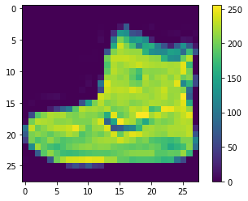
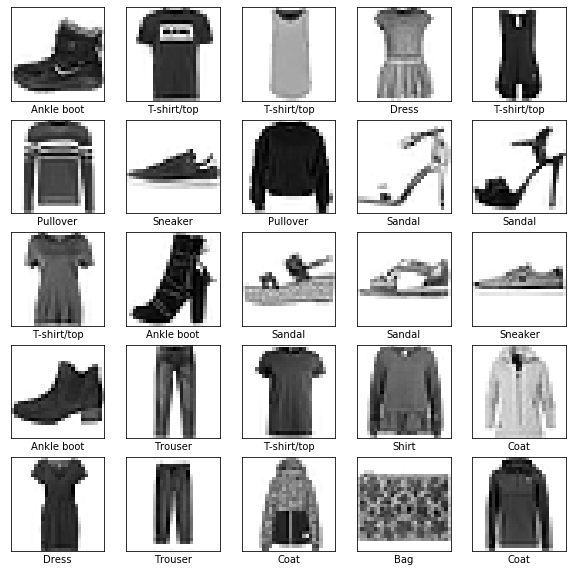
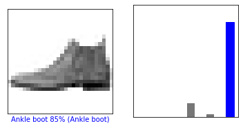
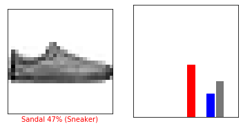
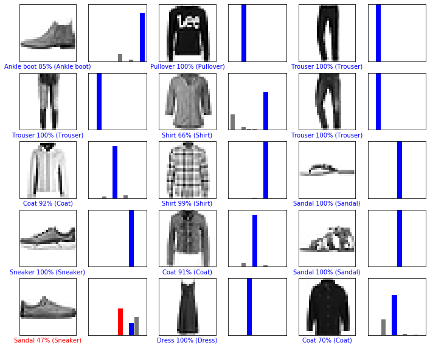
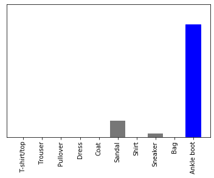

Clasificación del Fashion MNIST dataset¶
30 min | Última modificación: Julio 09, 2019
Basado en: https://www.tensorflow.org/tutorials/keras/basic_classification?hl=es

Preparación¶
[1]:
from __future__ import absolute_import, division, print_function, unicode_literals
import tensorflow as tf
from tensorflow import keras
import numpy as np
import matplotlib.pyplot as plt
%matplotlib inline
print(tf.__version__)
2.0.0-beta1
Dataset¶
[2]:
##
## Descarga de los datos
##
fashion_mnist = keras.datasets.fashion_mnist
(train_images, train_labels), (test_images, test_labels) = fashion_mnist.load_data()
[3]:
##
## Nombres de las clases
##
class_names = [ # label
'T-shirt/top', # 0
'Trouser', # 1
'Pullover', # 2
'Dress', # 3
'Coat', # 4
'Sandal', # 5
'Shirt', # 6
'Sneaker', # 7
'Bag', # 8
'Ankle boot'] # 9
Exploración de los datos¶
[4]:
##
## Cantidad de patrones de entrenamiento
##
print(train_images.shape,
'\n',
len(train_labels))
(60000, 28, 28)
60000
[5]:
##
## Cantidad de patrones de prueba
##
print(test_images.shape,
'\n',
len(test_labels))
(10000, 28, 28)
10000
Preprocesamiento¶
[6]:
##
## Las figuras son de 28x28 pixels, y el
## color va entre 0 y 255
##
plt.figure()
plt.imshow(train_images[0])
plt.colorbar()
plt.grid(False)
plt.show()

[7]:
##
## Normalización del color al rango [0, 1]
##
train_images = train_images / 255.0
test_images = test_images / 255.0
[8]:
plt.figure(figsize=(10,10))
for i in range(25):
plt.subplot(5,5,i+1)
plt.xticks([])
plt.yticks([])
plt.grid(False)
plt.imshow(train_images[i], cmap=plt.cm.binary)
plt.xlabel(class_names[train_labels[i]])
plt.show()

Construcción del modelo¶
Configuración de las capas¶
[9]:
model = keras.Sequential([
keras.layers.Flatten(input_shape=(28, 28)),
keras.layers.Dense(128, activation=tf.nn.relu),
keras.layers.Dense(10, activation=tf.nn.softmax)
])
Compilación¶
[10]:
model.compile(
optimizer='adam',
loss='sparse_categorical_crossentropy',
metrics=['accuracy'])
Entrenamiento¶
[11]:
model.fit(
train_images,
train_labels,
epochs=5);
WARNING: Logging before flag parsing goes to stderr.
W0709 14:05:45.308636 139789610583872 deprecation.py:323] From /usr/local/lib/python3.6/dist-packages/tensorflow/python/ops/math_grad.py:1250: add_dispatch_support.<locals>.wrapper (from tensorflow.python.ops.array_ops) is deprecated and will be removed in a future version.
Instructions for updating:
Use tf.where in 2.0, which has the same broadcast rule as np.where
Train on 60000 samples
Epoch 1/5
60000/60000 [==============================] - 4s 59us/sample - loss: 0.4975 - accuracy: 0.8252
Epoch 2/5
60000/60000 [==============================] - 4s 60us/sample - loss: 0.3747 - accuracy: 0.8652
Epoch 3/5
60000/60000 [==============================] - 3s 57us/sample - loss: 0.3355 - accuracy: 0.8775
Epoch 4/5
60000/60000 [==============================] - 3s 57us/sample - loss: 0.3108 - accuracy: 0.8857
Epoch 5/5
60000/60000 [==============================] - 3s 58us/sample - loss: 0.2915 - accuracy: 0.8921
Evaluación de la precisión¶
[12]:
test_loss, test_acc = model.evaluate(test_images, test_labels)
print('Test accuracy:', test_acc)
10000/10000 [==============================] - 0s 36us/sample - loss: 0.3666 - accuracy: 0.8742
Test accuracy: 0.8742
Pronóstico¶
Pronóstico para todo el conjunto de prueba¶
[13]:
##
## Realiza la predicción para el conjunto de test
##
predictions = model.predict(test_images)
[14]:
##
## Valores asignados a cada una de las clases
## pra el primer ejemplo
##
predictions[0]
[14]:
array([5.63242111e-06, 4.64350506e-07, 8.01351143e-06, 2.80851054e-07,
1.03667926e-05, 1.23891346e-01, 2.48278848e-05, 2.67038886e-02,
4.60173715e-06, 8.49350631e-01], dtype=float32)
[15]:
##
## Suma de los valores asignados a cada clase.
## Puede asimilarse a probabilidad.
##
sum(predictions[0])
[15]:
1.0000000534926414
[16]:
##
## Label para el que se produce el valor más alto
##
np.argmax(predictions[0])
[16]:
9
[17]:
##
## Grafica la imagen
##
def plot_image(i, predictions_array, true_label, img):
predictions_array, true_label, img = predictions_array[i], true_label[i], img[i]
plt.grid(False)
plt.xticks([])
plt.yticks([])
plt.imshow(img, cmap=plt.cm.binary)
predicted_label = np.argmax(predictions_array)
if predicted_label == true_label:
color = 'blue'
else:
color = 'red'
plt.xlabel("{} {:2.0f}% ({})".format(
class_names[predicted_label],
100*np.max(predictions_array),
class_names[true_label]),
color=color)
[18]:
##
## Grafica un diagrama de barras con la probabilidad
## asignada a cada label
##
def plot_value_array(i, predictions_array, true_label):
predictions_array, true_label = predictions_array[i], true_label[i]
plt.grid(False)
plt.xticks([])
plt.yticks([])
thisplot = plt.bar(range(10), predictions_array, color="#777777")
plt.ylim([0, 1])
predicted_label = np.argmax(predictions_array)
thisplot[predicted_label].set_color('red')
thisplot[true_label].set_color('blue')
[19]:
##
## Ejemplo para la imagen 0 del conjunto de test
##
i = 0
plt.figure(figsize=(6,3))
plt.subplot(1,2,1)
plot_image(i, predictions, test_labels, test_images)
plt.subplot(1,2,2)
plot_value_array(i, predictions, test_labels)
plt.show()

[20]:
##
## Ejemplo para la imagen 12 del conjunto de test
##
i = 12
plt.figure(figsize=(6,3))
plt.subplot(1,2,1)
plot_image(i, predictions, test_labels, test_images)
plt.subplot(1,2,2)
plot_value_array(i, predictions, test_labels)
plt.show()

[21]:
##
## Evaluación de las primeras 15 imagenes, etiqueta pronosticada y
## etiqueta verdadera. Etiqueta correcta en azul, equivocada en rojo.
##
num_rows = 5
num_cols = 3
num_images = num_rows*num_cols
plt.figure(figsize=(2*2*num_cols, 2*num_rows))
for i in range(num_images):
plt.subplot(num_rows, 2*num_cols, 2*i+1)
plot_image(i, predictions, test_labels, test_images)
plt.subplot(num_rows, 2*num_cols, 2*i+2)
plot_value_array(i, predictions, test_labels)
plt.show()

Pronóstico para imágenes individuales¶
[22]:
##
## Imagen a ser pronosticada
##
img = test_images[0]
img.shape # tamaño
[22]:
(28, 28)
[23]:
##
## Keras está optimizado para generar pronósticos
## sobre colecciones, por lo que debe crearse una
## colección de una sola figura
##
img = (np.expand_dims(img,0))
img.shape
[23]:
(1, 28, 28)
[24]:
predictions_single = model.predict(img)
print(predictions_single, '\n', np.argmax(predictions_single))
[[5.63241611e-06 4.64350080e-07 8.01351143e-06 2.80849179e-07
1.03667735e-05 1.23891369e-01 2.48278629e-05 2.67038699e-02
4.60173715e-06 8.49350631e-01]]
9
[25]:
plot_value_array(0, predictions_single, test_labels)
plt.xticks(
range(10),
class_names,
rotation=90);
